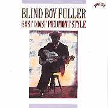

- (Блайнд Бой Фуллер), слепой гитарист, записывавшийся во второй половине 30-х годов, представитель пьедмонтского стиля.
(Конспект "ВЭБ" от 08.98)
"I’M A RATTLE SHAKIN’ DADDY" переводить буквально не стоит. Подразумевается поверье, что гремучая змея гипнотизирует свою жертву, потряхивая погремушкой на хвосте. Ну а герой этой песни уверен, что обладает гипнотическим воздействием на прекрасный пол. Что уж там служит ему волшебной погремушкой?.. Под собственный гитарный аккомпанемент Блайнд Бой Фуллер исполнил этот блюз в 1935 году в студии фирмы "VOCALION" (входившей в AMERICAN RECORDING COMPANY) в Нью-Йорке, куда его привезли для записи его первой пластинки.
Теория-история…
Два стиля - чикагский и техасский - известны каждому, кто хоть слегка интересовалс историей блюза. Чикагский – магистральное направление, заложившее основу и рок-музыки. (Причем, не только собственно музыкальными приемами, но и сценическими манерами. То есть то кривляние, которым всякие рокеры в 60-х ошарашивали старушку Европу, было всего лишь подражанием манерам звезд черных рабочих кабаков Чикаго; приемам, направленным на то, чтобы растормошить усталого и пьяного с двум долларами в кармане, работягу.) Техасский, по сравнению с техасским, более легкий и подвижный стиль, был с 50-х в тени «северного собрата», а сегодня, пожалуй, именно он определяет звучание блюза. А есть еще и луизианское - чудное - направление, в причудливой решетке странных ритмов, родившихся в новоорлеанском карнавале Марди-Грасс. Из всех стилей, которые знал блюз, сегодня самым забытым стал процветавший когда-то пьедмонтский (разве что CEPHAS & WIGGINS работают в нем сегодня). Факт тем более удивительный, что именно с пьедмонтского стил началось увлечение фолк-блюзом, на котором уже, в свою очередь, поднялся блюзовый бум. Удивительный, но легко объяснимый… Пьедмонтцы были, что называется в английском, FINGERPICKERS – щипали пальцами струну. С пришествием электричества в музыку, эта довольно деликатна манера игры на гитаре оказалась не у дел.
Теоретики называют Блайнд Бо Фуллера – «эклектичным», подразумевая под этим, что он не только блюз играл, и заимствовал исполнительские приемы из соседних музыкальных стилей. Блайнд Бою Фуллеру до строгости стил дела было мало. Он не в клубах выступал, а на улицах маленького городка Дурнхэм в Северной Каролине. И играл те песни, которые нравились прохожим. А хит-парад определял на слух – не по аплодисментам, нет,- по звяканью монеток в кепке, положенной на мостовую для добровольных пожертвований.
Cегодня альбом записей Блайнд Бо Фуллера не звучит «эклектично». Да он не был строгим блюзмэном. Играл рэг-таймы - блестяще!.. Сочетал безупречную технику с улетно-оттяжным ритмом...Одни его песни демонстрируют весьма утонченную гитарную технику, другие - сугубо простоватый слайд. "Короче, немногие блюзмэны того периода были более стилистически разнообразны, чем Блайнд Бой Фуллер,"- написал авторитетнейший блюзовед ROBERT SANTELLI (Роберт Сантелли). Из разношерстности составляющих Фуллер создал свой органичный индивидуальный стиль.
Счастливо время, когда популярна
музыка включает в себя импровизацию. (Когда
фанера возводится в звезды – это уже музыка поп.)
– "Крошка, лучше передумай». BULL CITY RED
(Булл Сити Ред) аккомпанировал Блайнд Бою Фуллеру
на стиральной доске. Второй гитарист – BLIND
GARY DAVIS (Блайнд Гэри Дэвис, он-то как раз
станет знаменитостью на волне американского
фолк-блюзового бума, правда, для солидности
(возраст все-таки), D 50-х на сцену он будет выходить
как Преподобный – REVEREND – GARY DAVIS).
Гэри Дэвис утверждал, что до встречи с ним Блайнд Бой Фуллер не умел толком сыгать на гитаре и ноты. Всему, мол, он его научил. Блайнд Бой Фуллер наоборот - рассказывал, что это он учил играть на гитаре Гэри Дэвиса.
Подобные разночтения в истории
блюза не редки. Люди живые играют блюз, они и
заблуждаются искрене, и стараются выставить себ
в самом выгодном свете, и чистосердечно забывают
что-то, не очень приятное…
Документально известно, что во второй половине
30-х, на переломе Великой Депрессии, Блайнд Бой
Фуллер был одним из топ-селлеров. Его пластинки
продавались самыми большими тиражами.
– «Стыдно до слез». Фуллер был топ-селлером, но прежде всего, был он блюзмэном. Для 30-х это железно означает, что, даже будучи топ-селлером, он все равно умер нищим. (Помните, у Блайнд Лимона Джефферсона (BLIND LEMON JEFFERSON): «Могилу мне можешь вырыть хоть серебряной лопатой, лягу я в нее в своих кандалах.»
История Блайнд Боя Фуллера начинается с рождения 10 июля 1907 года Фултона Аллена. В 1925г. за Фултона Аллена вышла Кора Мэй Мартин. Поселились молодые в городе Дурнхэме. Ему – 18, ей 14. У него появились проблемы со зрением. В 1929г. он полностью ослеп. (К врачам не ходили, бесплатные врачи дл бедных такими тонкостями, как зрение, не занимались. Так что диагноз болезни, приведшей молодого человека к слепоте – неизвестен.) Со зрением вместе потерял он и работу. Семь оказалась на нищенском пособии в самый разгар Великой депрессии.
По некоторым источникам Фултон Аллен с детства умел играть на гитаре. Первое документальное упоминание о его профессиональной деятельности – именно связано с конторой, выдававшей пособия. В 1933г. глава комиссии по «велфэру» написал бумагу начальнику городской полиции с просьбой разрешить Аллену «заниматься музыкой на улицах Дурнхэма в местах, Вами определяемых, по возможности, рядом с табачной фабрикой, во время. когда рабочие возвращаются со смены». Такие дела.
Некто Джеймс Бакстер Лонг, белый,
держал магазинчик грампластинок в Дурнхэме.
Нижеследующая история хорошо иллюстрирует
положение дел в звукозаписывающей
промышленности довоенной эпохи. Это – типична
история.
Мистер Лонг не был лентяем. К примеру, сохранилась фотография: он на фоне ряда коробок с пластинками. Фотография - по особому случаю, который потом Американска Звукозаписывающая Корпорация использовала в своей рекламной компании. Подпись под фотографией гласит: «5606 пластинок за раз. Сама большая отправка, когда-либо зарегистрированна в для магазинов Северной Каролины». Такой вот он поставил рекорд в 1934 году.
Лонг понимал, что в категории «расовых» записей (она появилась в 30-х) лучше всего будут расходиться именно записи местных артистов. Усадить их петь прямо перед входом в магазин – это и будет лучшей рекламой. В 1934г. Лонг уже возил в Нью-Йорк на запись нескольких дурнхэмских музыкантов. И в том же году он услышал впервые Фултона Аллена, в холодный день тот пел у входа в табачный магазин, одетый, как вспоминал Лонг, не по погоде. Он весь дрожал - но только не его голос, и не его пальцы. Лонг сразу понял, это человек – может петь. И в следующем году повез его и еще двух музыкантов дл аккомпанемента – в Нью-Йорк. И вот где-то по пути из заштатного Дурнхэма в город миллионов огней Фултон Аллен превратился в Слепого Парн Фуллера. Чья бы ни была идея, она себя оправдала. За этим псевдонимом сразу чувствовалась типическая биография. Что привлекало внимание. Музыка говорила сама за себя. Пластинки Блайнд Боя Фуллера сразу стали пользоваться успехом.
(А настоящее имя Рыжего из Буйволиного Города (aka BULL CITY RED)? - Джордж Вашингтон (GEORGE WASHINGTON)
Дебют Фуллера в студии: июль 1935 года. Он много песен записал в тот день: и соло, и в сопровождении дуэта Блайнд Гэри Дэвиса, гитара, и Балл Сити Реда, стиральная доска. Не все опубликовано на пластинках. Запись производилась сразу на диск, который, если исполнение признавалась удачным, и служил потом «мастером»; с него делались формы для печати копий. То есть, промышленная цепочка по производству пластинок начиналась непосредственно в студии. На изначальную болванку помещалось чуть более трех минут звучания. Обычно в отделенной стеклом кабинке, где сидел звукорежиссер, загоралась красна лампочка, дававшая сигнал артисту, что пора закругляться. Блайнд Бой Фуллер, разумеется, лампочку эту не мог видеть. Рядом с ним в студии садился человек: на-лампочку-смотрящий. В первую сессию им был Балл Сити Ред. Увидев красный огонек, он должен был тихо положить руку на плечо музыканту. Но Блайнд Бой, то ли настолько волновался, то ли так глубоко уходил в песню, что прикосновение оказывалось неожиданным, он вздрагивал - и либо запись была испорчена, либо финал оказывался скомкан.
На более поздних записях он чувствовал себя куда свободней.
Но как раз более поздние - менее теплые. И среди них чаще встречается слайд.
Все блюзы, исполненные им в студии, сочинения Блайнд Боя Фуллера, хотя без заимствований жанр блюза в то время, как и сейчас, не существовал и не существует.
Певец-гитарист WILLIE TRICE, акомпанировавший однаждый Фуллеру на записи, вспоминал, как сиживал у фонографа, разучива чужие песни нота за нотой, слово за словом. Многие темы и строчки и гитарные ходы Блайнд Бой Фуллер «одалживал». Чаще всего – у Блайнд Уилли МакТелла (BLIND WILLIE McTELL). Но, разумеется, все одолженное, он творчески примеривал на себя. «Я любил только трех женщин в своей жизни: мать, сестру и ту женщину, что сломала мне жизнь» – эта строчка, вероятно, впервые записанная МакТеллом, стала блюзовым клише. Использовал ее и Блайнд Бой Фуллер, хотя бы в KEEP AWAY FROM MY WOMAN. Но в ‘THOUSAND WOMAN BLUES" он перевернул эту строчку, спев: "Никого я не любил в своей жизни, разве что тысячу женщин".
А CAT MAN BLUES– пример заимствований из европейской музыки в блюзе. В основе – старинна английская баллада "OUR GOODMAN" ("Наш добряк») на вечную, видимо, тему. Блайнд Бой Фуллер не был бы блюзмэном, если бы не досочинил кое-что от себя. Добряк превратился в CATMAN. «Я бы не называл этого мужика котом, если бы он приходил в наш дом днем. Но он ждет ночи, чтобы прокрасться в дом пока меня нет, и похитить у меня сливки.» CAT MAN BLUES - один из многих не-блюзов со словом «блюз» в названии.
Популярность Фуллера во второй половине 30-х была велика. Всего за пять лет он записал 135 песен: более 70-ти пластинок. То есть, по одной пластинке на каждый месяц пятилетки. Дж.Б.Лонг опекал его, обеспечивая работой в стулии, и труд Фуллера был оплачен, пусть и не очень щедро.Все же в масштабах 30-х Ланг вел себ более чем достойно. А Фуллер все равно он явно не умел распоряжаться деньгами.
К концу тридцатых Блайнд Бой Фуллер взял под свое крыло двух музыкантов, которые, когда его самого уже не станет, прославят пьедмонтский стиль, перевезут его в Нью-Йорк, заразят ему Пита Сигера и других белых исполнителей «рабочих песен протеста».
Первый – SONNY TERRY (Санни Терри) - слепой музыкант, исполнитель на губной гармонике, был его земляком. В репертуар Сонни Терри войдут многие песни Блайнд Боя Фуллера. Блюз "I’M A STRANGER HERE" – "Я здесь чужак» – один из первых, записанных дуэтом Фуллер-Терри. 1939г., Мемфис.
"Я здесь – чужак" уже
демонстрирует типичные подвывания Сонни Терри,
ставшие его фирменным знаком.
В 1938г. в Дурнхэм специально прибыл
знаменитый искатель талантов JOHN HAMMOND
(Джон Хэммонд) (теперь нужно уточнять – старший,
поскольку сын его – Джон Хэммонд сегодня –
известнейший блюзмэн, хранитель акустических
традиций). Хэммонд-старший хотел пригласить
Фуллера в программу легендарных концертов «FROM
SPIRITUALS TO SWING" в Корнегги-холле. Но Фуллер как раз
в это время ненадолго угодил в тюрягу за
покушение на жизнь своей жены. По рассказам
Хэммонда, слепой Фуллер стоял в центре комнаты и,
поворачиваясь по кругу, методично стрелял – вот
как это случилось. С какой только точки наблюдал
за процессом искатель талантов?
В общем, Хэммонду пришлось взять с собой в Нью-Йорк Санни Терри и певца-гитариста Брауни МакГи (BROWNIE McGHEE), второго протеже Блайнд Боя Фуллера.
Фуллера скоро выпустили. Видать, стрельба по благоверной не считалась чем-то серьезным в Дурнхэме того времени. А вот свой шанс предстать пред белой «культурной» Америкой – шанс очень важный – Фуллер упустил. Терри и МакГи изведали славу, Нью-Йорк счел их - блюзовой солью Нового Света.
Здоровье Фуллера ухудшилось – в тюрьме у него открылась язва желудка. 1940й год он провел то дома в постели, то в госпитале.
Свою гитару он отдал Брауни МакГи – и тот отправился в гастроли как BLIND BOY FULLER #2 (Блайнд Бой Фуллер-второй), под этим именем он и первые свои пластинки выпустил. (А был еще и RICHARD TRICE, выступавший как LITTLE BOY FULLER).
13 февраля 1941 года Блайнд Боя Фуллера не стало.
Но еще несколько лет записи его, хранившиеся в архивах, продолжали издаваться с неизменным успехом. И так продолжалось до прихода электричества в музыку.
CD-графия:
Среди компакт-дисков, представляющие записи Блайнд Боя Фуллера, стоит назвать четыре. К сожалению, нельзя ни выделить лучший, ни сказать, что они и дополняют друг друга, поскольку во многом они «пересекаются», то есть, представляют по несколько одинаковых песен. Альбом

BLIND BOY FULLER – EAST COAST PIEDMONT STYLE" (из престижной серии "BLUES’N’ROOTS") COLUMBIA-SONY MUSIC. На нем представлены 11 из 12 песен, записанных Фуллером в его первое посещение студии звукозаписи в 1935г., плюс несколько треков последующих лет. Но ни один трек не представляет слайд-технику Фуллера. Дополнительные плюсы: техника реставрации звука CEDAR; вдумчивая и статья B.BASTIN'a, касающаяся и биографии, и музыкального творчества Блайнд Боя. Независимая фирма "TRAVELLING MAN" свою серию исторических записей открыла именно собранием "BLIND BOY FULLER 1935-1940"; здесь шесть песен из последней сессии Блайнд Бо Фуллера, есть спиричуэлсы, не представленные ни в одной другой компиляции его записей. Много треков с участием Санни Терри. И на одном солирует как вокалист Балл Сити Ред (аккомпанировавший Фуллеру на стиральной доске). Поболее слайда - в собрании, подготовленном авторитетами блюзовых архивов – фирмой "YAZOO": "TRUCKIN’ MY BLUES AWAY". Здесь представлены песни Фуллера, оказавшие наибольшее влияние на его последователей, те, что позже исполняли Санни Терри и Брауни МакГи, а позже – группа THE BAND и RORY GALLAGHER, а сегодня поют CEPHAS & WIGGINS и COREY HARRIS. Дополнительный плюс: никакой реставрации звука - все шипит и трещит, как это было в расцвет популярности Фуллера. Самая свежая антология: GET YOUR YAS YAS OUT: THE ESSENTIAL BLIND BOY FULLER (INDIGO, 1996).Кроме того, DOCUMENT скрупулезно выпускал многотомное (многокомпактное) собрание записей Фуллера COMPLETE CHRONOLOGICAL RECORDINGS, VOL1-6. Но это уже дл обеспеченных любителей блюза.